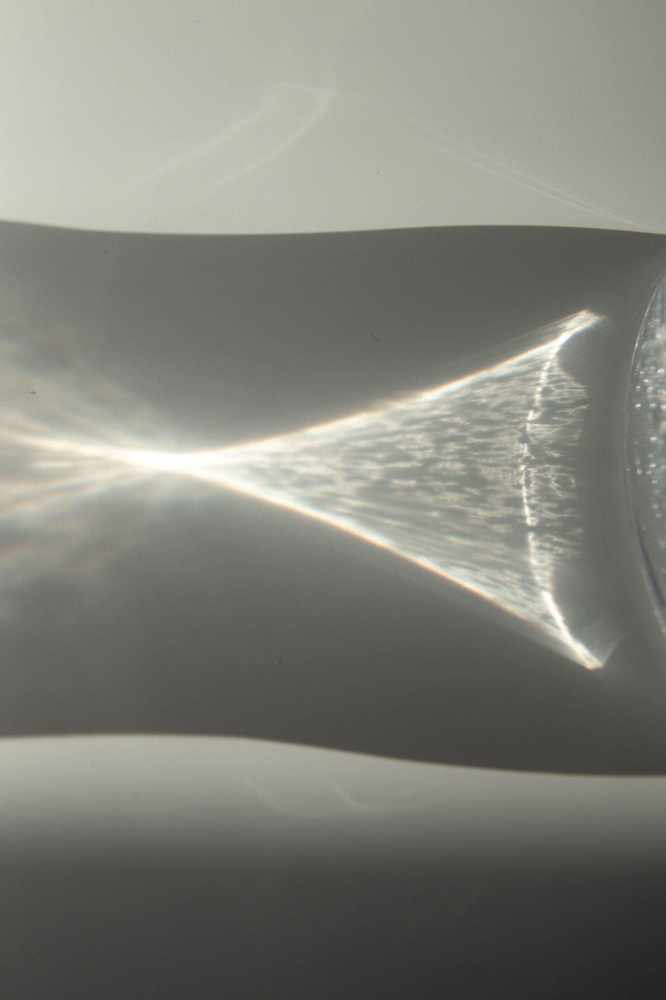
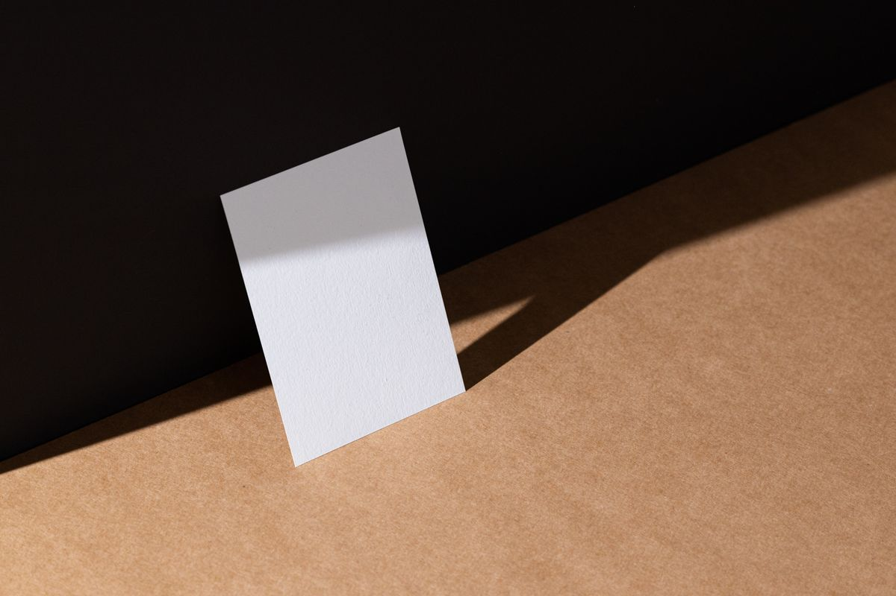
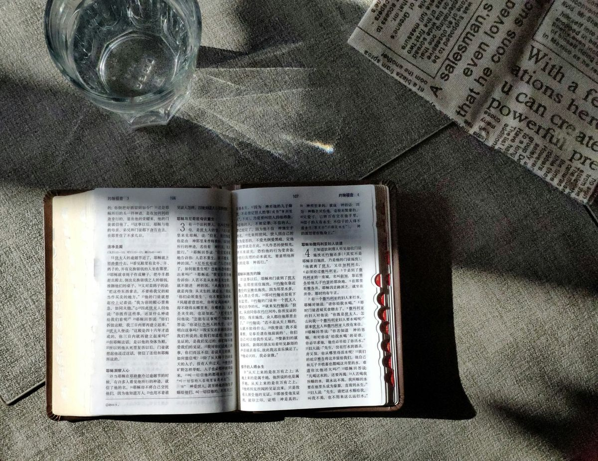

第一间展厅I. PAPER
纸。
所有被保存的事物，
都曾轻得像一张纸。
一页纸有正反两面。一面接受书写，一面把阴影收起来。我们读到的也许是文字，真正留下的却常常是折痕。

fold / unfold
纸从来不是空白的。
即使没有一个字，
它也记得光从哪里来。
我们把看不见的部分，
留给想象。
留给想象。
“一张纸被折起时，
距离突然变得很近。”

第二间展厅II. LIGHT
光，不是
被看见的东西。
它让别的事物
改变了形状。
拖动透镜，让文字在光里弯曲 · 长按，感受形变
实时光学位移
在这一刻，字仍然是字。
改变的只是观看它的方式。
这是透过虚拟透镜的实时图像采样位移，而不是仅仅将背景模糊。低性能设备会自动进入静态版本。
第三间展厅III. TIME
时间
有自己的笔迹。
我们无法将一天留住。
但有时，可以让某一刻缓慢地经过。
最初，只是一道细微的光。
后来，日子有了可以触摸的纹理。
再后来，记忆从边缘慢慢褪色。
留下的，并不一定是失去的。
00:00
01:00
03 / 记忆的余温
向下滚动，故事继续；留在这里，也可以亲手掌握它流动的速度。时间不需要一个正确答案。
展览附册THE EDITION
把展览，
带走一页。
三页小小的放映稿。
光、纸、时间——像三张尚未寄出的明信片。
折光档案 · 艺术展册PowerPoint · 3 页 · 16:9 · 图片式幻灯片
下载展册